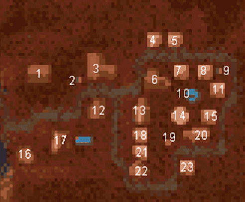

Kriegspire: City Map

| 1. | Tavern: The Broken Promise (fills for 20 days) |
| 2. | Fountain: +30 level temporary |
| 3. | Training: Lone Tree Training |
| 4. | NPC: heals and cures party once a day, takes 50% of gold -- what a joke! |
| 5. | NPC: +4 points to merchant and diplomacy skills, takes 5% of gold. |
| 6. | Weapons: Knight's Paradise |
| 7. | NPC: +5 points to luck and takes 1% gold. |
| 8. | NPC: casts Heroism once a day at master level and takes 3% gold. |
| 9. | Fountain: drops you right into the middle of the Castle Kriegspire dungeon. |
| 10. | Fountain: +10 permanent magic resistance, Eradicates character |
| 11. | Emil Lime the Enchanter gives you the [Find Egg Quest]. |
| 12. | Armor: Armorworks |
| 13. | NPC: all map crossings one day faster, takes 1% gold |
| 14. | Fire Tower |
| 15. | NPC: +10% experience, takes 3% gold |
| 16. | General Stores: Unusual Enchantments |
| 17. | Stables: King's Highway [Travel Schedule] |
| 18. | NPC: cures party once a day, takes 20% gold |
| 19. | Fountain: trades 5,000 gold into 5,000 experience |
| 20. | NPC: +15% experience, takes 7% gold |
| 21. | NPC: +4 points to diplomacy, takes 2% gold |
| 22. | Unknown Stone Tower |
| 23. | Expert Light Magic |
Leave us a message at: mgrounds@hotmail.com